| # | 片名 | 类型 | 评分 / 状态 |
|---|---|---|---|
| 01 | 希望 | 科幻 / 惊悚 / 怪物 | 80% / 主竞赛入围 / 韩影史最高 500 亿韩元 |
| 02 | 猛攻 | 动作 / 科幻 / 恐怖 | 56% / 76% / A24 |
| 03 | 最后孤屋 | 科幻 / 悬疑 / 生存惊悚 | 6.9 / 7.2 / Netflix 8 月 7 日 |
| 04 | 不存在的罪人 | 悬疑 / 心理惊悚 / 爱情 | 未上映 / 科琳·胡佛全球畅销 / R 级 |
| 05 | 准备好了没2：我来了 | 恐怖 / 黑色喜剧 / 惊悚 | 6.0 / 6.5 / 3920 万美元 |
| 06 | 某种物质 | 恐怖 / 身体恐怖 / 惊悚 | 7.5 / 7.4 / 89% |
| 07 | 诺斯费拉图 | 恐怖 / 哥特 / 剧情 | 7.0 / 7.1 / 84% |
| 08 | 秘密会议 | 悬疑 / 剧情 / 惊悚 | 7.6 / 7.4 / 93% |
| 09 | 因果报应 | 悬疑 / 犯罪 / 剧情 | 8.6 / 8.5 / 10 万+ |
| 10 | 异形：夺命舰 | 科幻 / 恐怖 / 惊悚 | 7.4 / 7.2 / 80% |
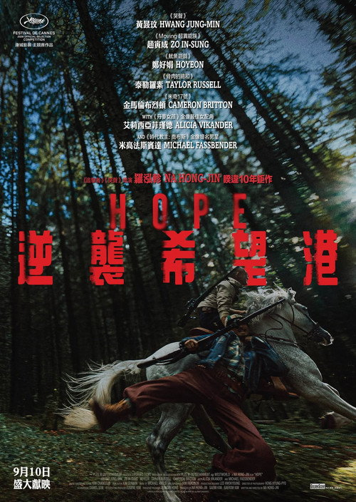
他们先以为是老虎。
非军事区边缘的港口小村「希望浦」，年轻人报告田里死了一头牛，浑身爪痕。派出所所长范锡（黄政民）的第一反应是山里有老虎——这个判断让他错得离谱。等他赶到，村子已成废墟，路上横着尸体，空气里是一种不属于任何已知生物的尖啸。与此同时，成基（赵寅成）带着一队猎人进山，在牛栏里发现一条被咬断、挂在树上的手臂。女巡警成爱（郑浩妍）从林子里杀出来救下范锡，三个人这才明白：来的不止一只，而且它们根本不是这个世界的形状。
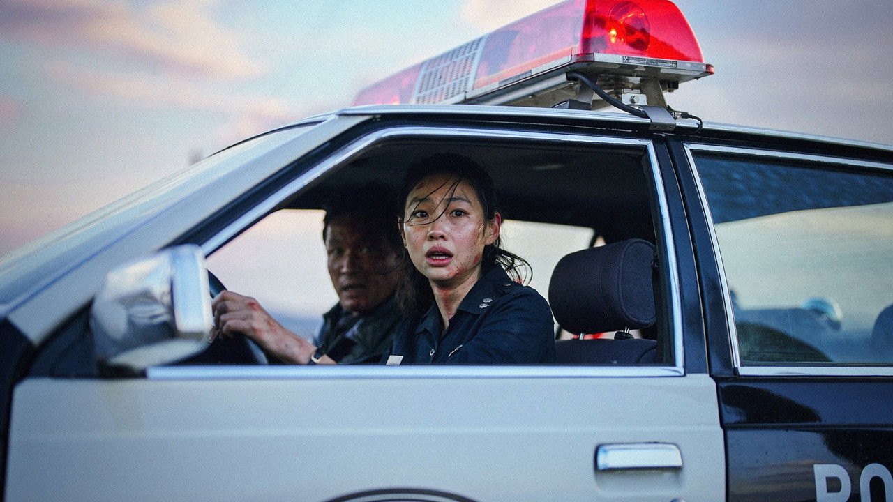
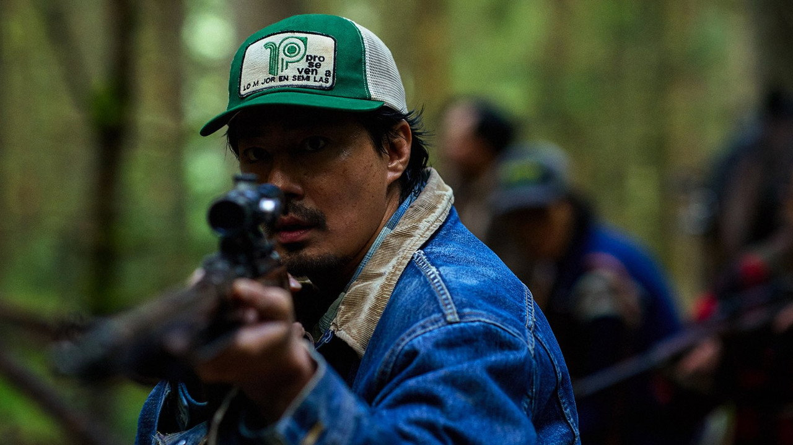
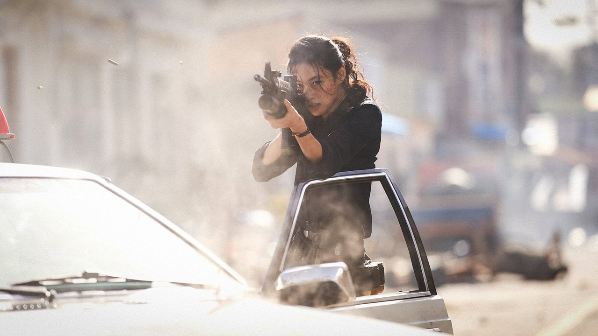
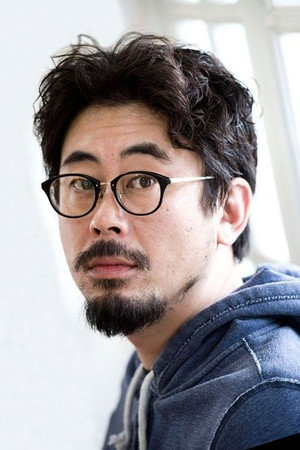
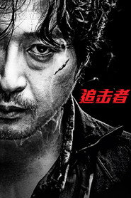
追击者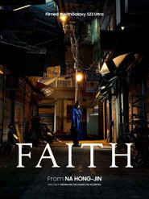
信仰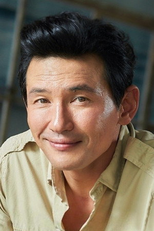
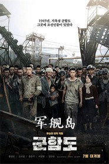
军舰岛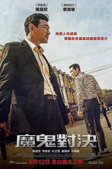
从邪恶中拯救我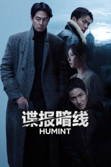
谍报暗线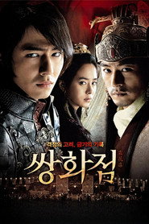
霜花店罗泓轸最擅长的从来不是让你看见，是让你在看不到的那段时间里自己想。这次他把同一招铺满 156 分钟：怪物几乎全程藏在画外，你只能靠断臂、被撕开的牛、村民的惨叫去拼它的样子。这个选择今天近乎挑衅——观众是被预告片喂大的，而《希望》拒绝给。它真正让人不安的是「希望浦」这个地名：一个紧挨 DMZ 的村子，村口立着「防止渗透，保卫国家」的牌子。村民的第一反应永远是「老虎」，因为老虎是他们能理解的威胁；而真正的威胁来自冷战留在这条线上的那道伤疤。老人们的段落拍得极好，超广角把他们和山一起框进画面里，你会觉得他们才是这片土地真正的居民。它不是一部让人舒服的电影——几乎没有喘息，最后也不给干净句号；但散场那种「我刚到底看了什么」的眩晕感，这两年没几部片给得了。至于那些东西究竟是什么、为什么来——我不说。
罗泓轸 / 《哭声》的影迷；想看一部「把怪物藏到最后」的科幻惊悚；对朝鲜半岛题材有感觉的人。156 分钟且几乎不给答案，想看爽片的会很难熬。北美 9 月 9 日由 Neon 上映，内地暂无引进消息。
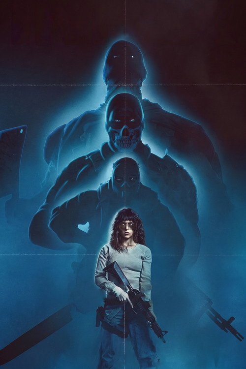
她不是被保护的那个，她是拿枪的那个。
前陆军狙击手塞莱斯特带着女儿住在沙漠里的一处拖车公园，日子过得一团糟，母女关系也紧绷。附近那座从来没人说得清的军事设施里，三名基因改造的超级士兵跑了出来，见人就杀。塞莱斯特只有一晚上，和一把枪。
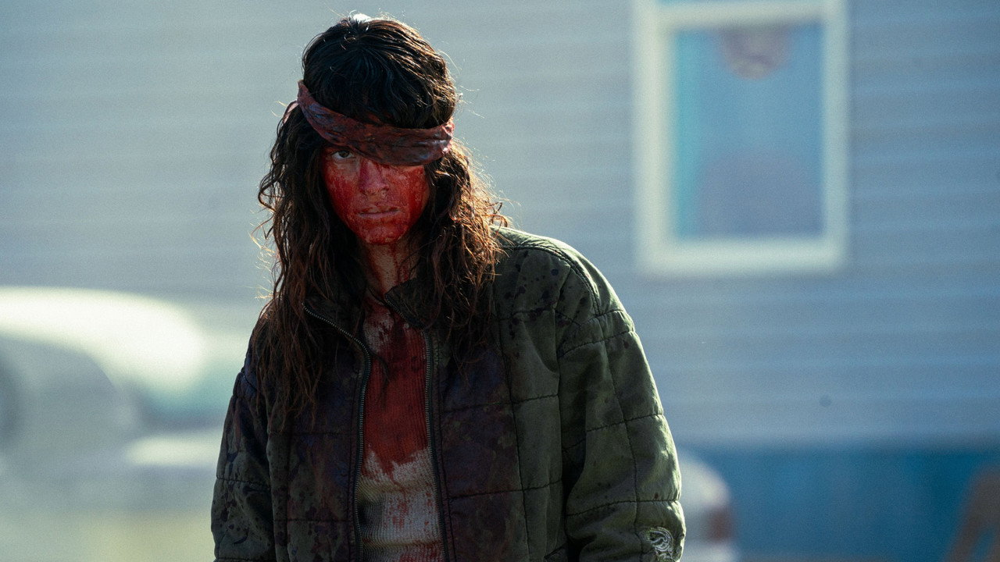
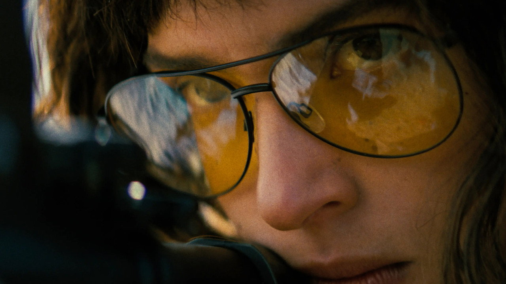
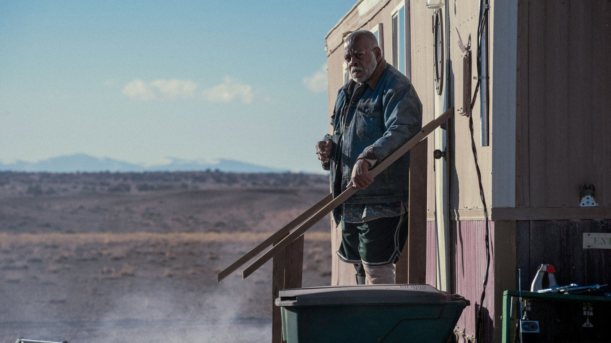
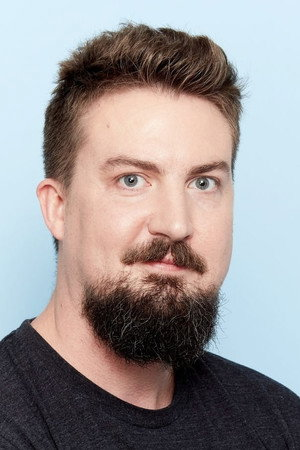
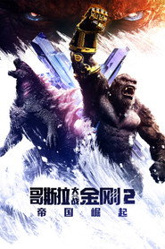
哥斯拉大战金刚2：帝国崛起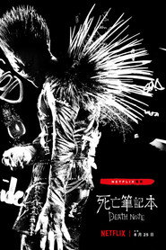
死亡笔记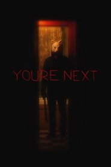
你是下一个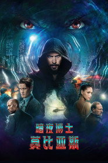
Morbius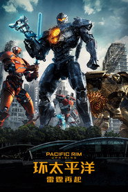
环太平洋：雷霆再起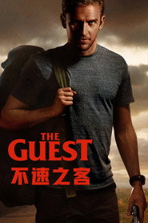
不速之客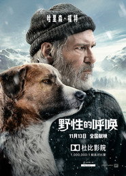
野性的呼唤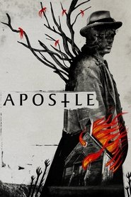
使徒温加德这次的姿态很清楚：不装深刻，就是要在 92 分钟里把你按在椅子上。他做到了一半。前半段氛围是真的好——沙漠拖车公园、远景里走来的黑影、合成器一压，那种八十年代录像带出租店的味道拿得很准。阿霍纳的状态也对，她不是「先被吓到再反杀」，她从第一分钟就是个拿过枪的人，动作带着一股难看的、没章法的狠劲。问题出在「倒计时」这个设定上押了太多注，中段退化成一场接一场的重复遭遇战；等真正该爆的时候电影反而结束了——《TheWrap》那句「它刚变好看就结束了」说得一点没错。烂番茄从映前 76% 一路掉到 56%，差评集中在「空洞的血浆」和「毫无意义的残忍」。但如果你要的就是一部不费脑的午夜场，它比大多数同类强；而且看温加德拍这种片子，明显比看他拍怪兽片开心。
八十年代 B 级动作片爱好者；约翰·卡朋特 / 早期卡梅隆的信徒；《不速之客》《你是下一个》的粉丝。空洞、重复、血浆过量是硬伤，别抱着看深度的期待进场。
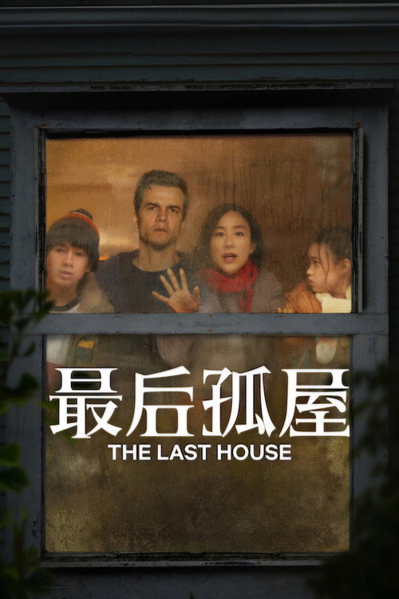
门打不开。窗户砸碎了会自己长回来。
一场暴雨过后，安和杰森发现家里所有的门都打不开。窗户砸碎会在几秒内重新聚合，像有一层看不见的湿气裹住了整栋房子。透过玻璃，他们看见对门的邻居也在砸窗——不只有他们。两个孩子、一条狗、一屋子的食物，和一场不知道要下多久的雨。
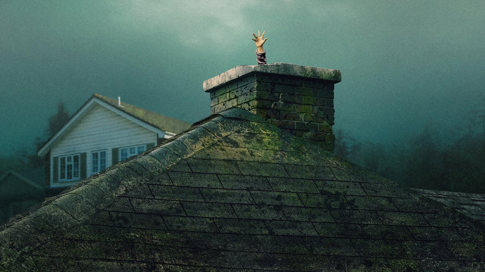
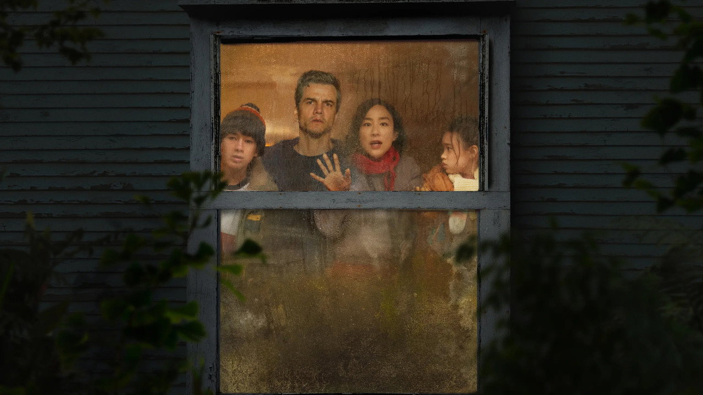
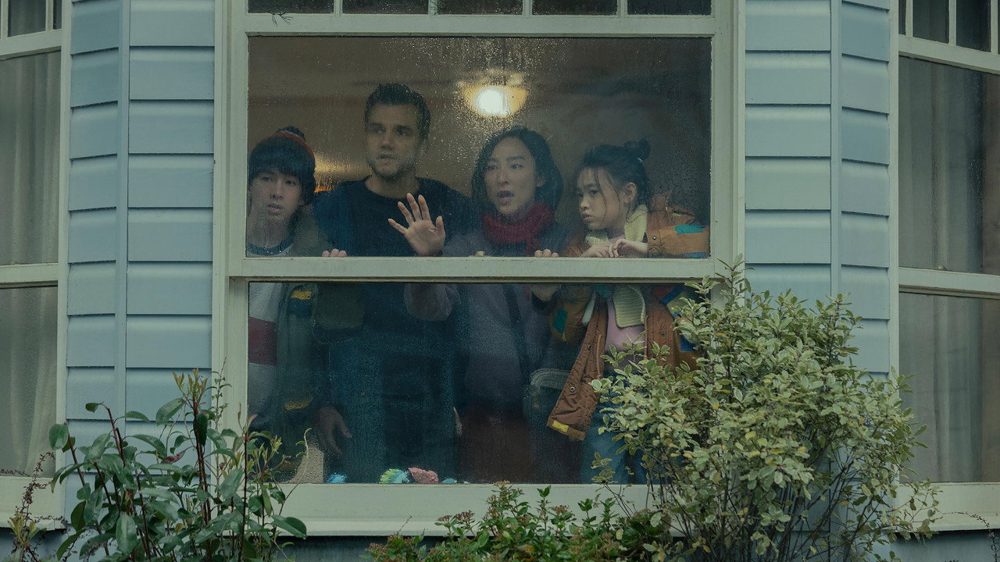
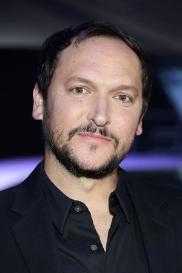
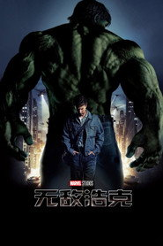
无敌浩克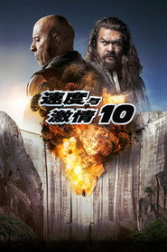
速度与激情10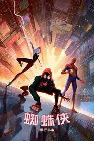
蜘蛛侠：平行宇宙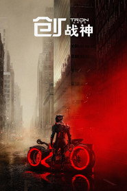
创：战神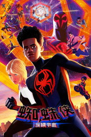
蜘蛛侠：纵横宇宙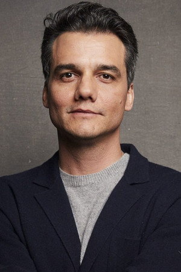
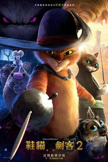
穿靴子的猫2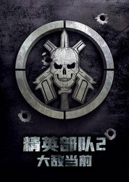
精英部队2：大敌当前它的卖点是「密室」，但真正写的是「时间」。大部分被困片把时间压成一晚，靠肾上腺素撑过去；莱特里尔把时间拉长到五年，于是问题从「怎么逃出去」变成了「在逃不出去的前提下怎么继续做人」——怎么分食物、怎么埋狗、怎么跟已经不是小孩的小孩相处。这个转向让它在同类里显得不太一样。中段那种「日子一天天过去而什么都没发生」的钝感是刻意的，也因此劝退了一批人（豆瓣 6.9 主要扣在这）。后半段的转折我完全没料到：当那些长着触手的东西终于进屋时，片子没有走向「灭了它」，而是走向「听懂它」——父亲一辈子都在试图控制或摧毁每一个威胁，这一次他选择相信女儿，把武器放下。这个落点比大多数末日片诚实，也比大多数末日片温柔。最后那记无线电里的「Hello?」很犯规，但确实让我坐到了字幕结束。
想看一部「被困在家」但不止于被困的科幻片；《寂静之地》《蒙上你的眼》那一路的观众。节奏慢、中段冗长，追求高密度刺激的会看不下去。Netflix 已上线。
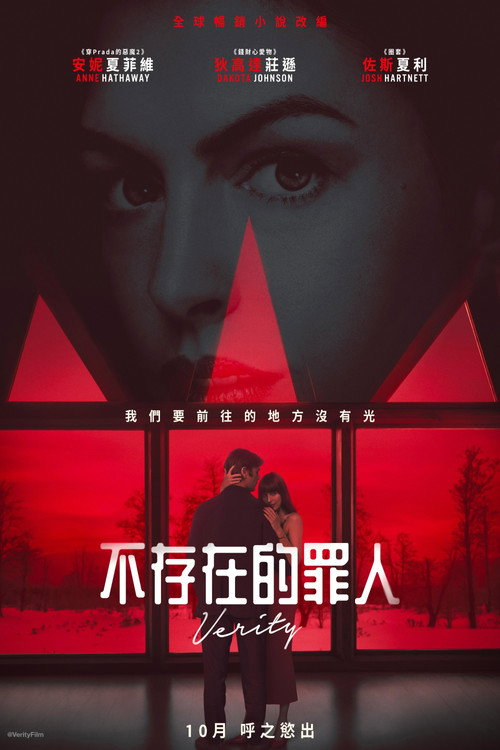
她翻到的那叠稿子，是这栋房子里最不该读的东西。
落魄作家洛温（达科塔·约翰逊）接到一份不可能拒绝的工作：帮畅销惊悚小说家维瑞蒂（安妮·海瑟薇）写完她未竟的系列。维瑞蒂因一场神秘事故卧床在家，无法动笔。丈夫杰里米（乔什·哈奈特）把洛温请进家门，允许她翻阅维瑞蒂所有的稿件与档案。然后她翻到一份未完成的手稿，类似自传，里面写的东西和这栋房子里那对「完美夫妻」的形象完全对不上。
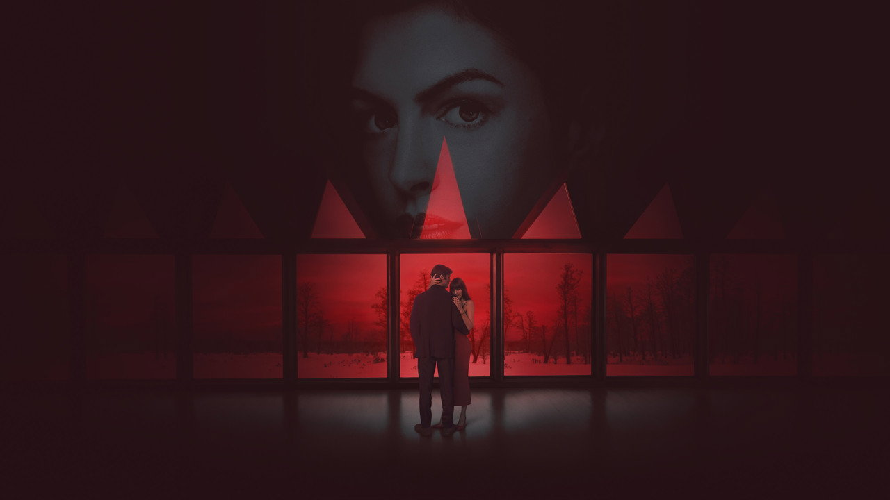
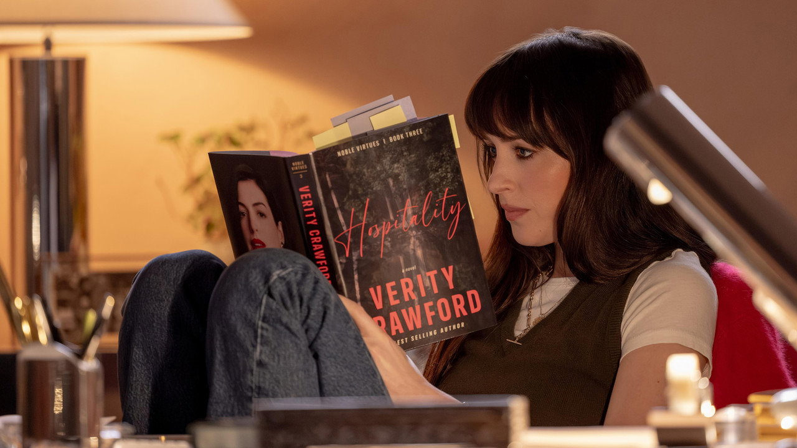
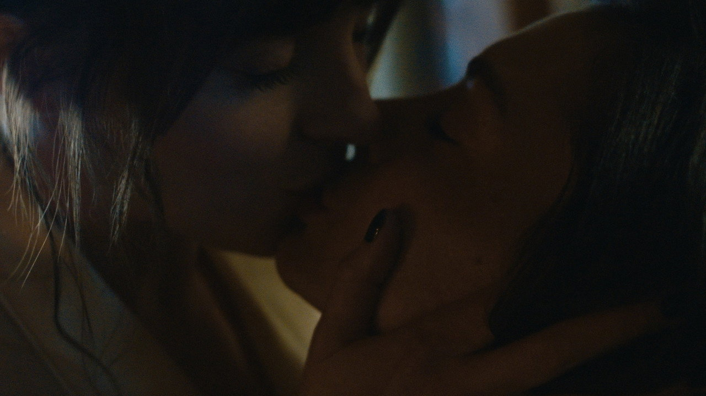
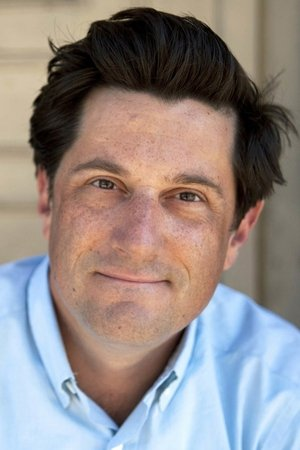
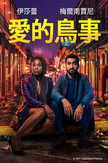
爱情鸟的自救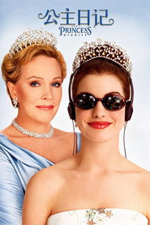
公主日记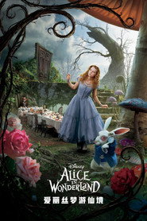
爱丽丝梦游仙境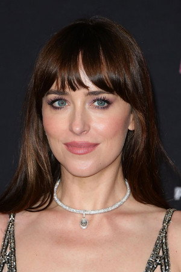
这条只能算预告片单，不是已验证推荐，我把话说在前面。只看物料的话：这是那种「全书最吓人的部分不是情节，而是叙述者本身不可靠」的小说，改编成败全押在「你到底信不信洛温」上。海瑟薇这两年一直在挑让自己不舒服的角色，维瑞蒂基本全程卧床、靠眼神和台词杀人，是个几乎不可能演砸也很难演好的设定——她要在一个静止的身体里演出压迫感。达科塔·约翰逊的舒适区恰好是「表面平静、内里失控」，两人对戏是这部片最大的赌注。我的期待值放在「一部做得很讲究的心理惊悚片」这一档；如果它真敢把小说那个结局原样拍出来，口碑会爆。上映后再补。
科琳·胡佛的书迷；安妮·海瑟薇 / 达科塔·约翰逊的影迷；喜欢《消失的爱人》《火车上的女孩》式「叙述者不可靠」悬疑的人。未上映、无评分、口碑待验证——这一条请当作待看清单，不要当作推荐结论。
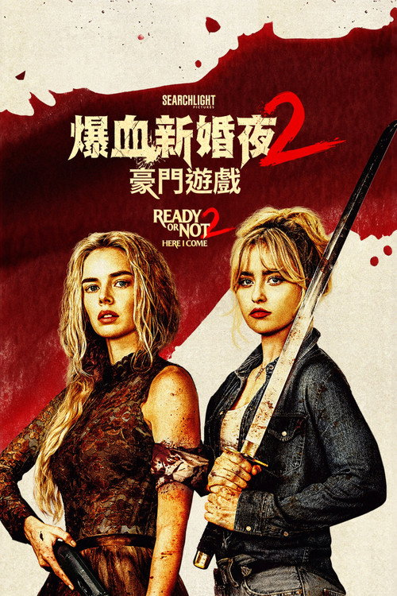
她以为活过那一晚就结束了。那一晚只是第一轮。
格蕾丝穿着浸透血的婚纱坐在燃烧的勒多马斯庄园外，醒来时发现自己被铐在医院病床上——她得解释庄园里那些尸体。勒多马斯家只是那个撒旦契约联盟里的一支，他们的覆灭让议会最高席位空了出来。剩下五个家族被召集起来，规则很简单：谁杀了格蕾丝，谁就坐上那个位子，接管这个世界；如果她活到天亮，位子归她。而她那个疏远多年的妹妹费丝（凯瑟琳·纽顿），也被一起拖进了这场游戏。
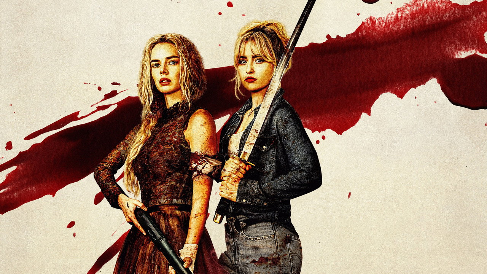
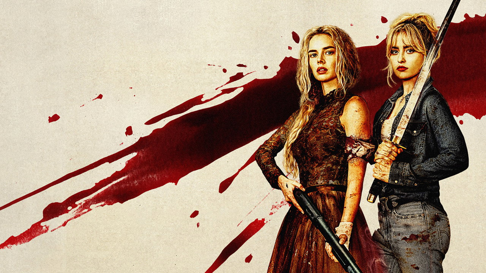
它精准踩中了续集最常见的那个死法：什么都翻倍，唯独锋利度减半。第一部好笑，是因为那群穿礼服的蠢货一边优雅地互相内讧一边笨拙地杀人，荒诞感是从「阶层」里长出来的；第二部把反派换成五个家族的职业猎人，笑点立刻塌了一半。格蕾丝这个角色也尴尬——她明明握着最高权限，能一句话终结整场游戏，编剧却为了保留「逃杀爽感」强行封印她的能力，这是全片最大的逻辑洞。但话说回来，萨玛拉·维文是真的拼：她把恐惧、狂怒、疲惫和黑色幽默压在同一件脏婚纱里，几场搏斗戏的动作设计和情绪爆发几乎同步。莎拉·米歇尔·盖拉和肖恩·海托西演的那对双胞胎是意外收获——那种一边谈笑一边杀人的轻佻，是全片最让人不舒服、也是最好的部分。姐妹线虽然工具化，但确实给了它一点温度。豆瓣 6.0、IMDb 6.5，外网口碑好于国内；如果只是想找个周五晚上解压，它够用。
第一部的粉丝；想看血浆 + 黑色幽默的解压局；莎拉·米歇尔·盖拉（《吸血鬼猎人巴菲》）的情怀观众。别抱着「超越前作」的期待进场，会失望。
你要做的只是：把自己分成两个。条件是，你们共享同一份时间。
伊丽莎白（黛米·摩尔）曾经是好莱坞最亮眼的名字，如今五十岁，主持着一档晨间健身节目，被制片人（丹尼斯·奎德）以「你不够年轻了」为由扫地出门。一次车祸后，一个陌生的年轻人塞给她一支注射器和一张卡：「某种物质」。它能复制你的细胞、生成一个更年轻更完美的自己。规则很简单：你和她轮流，七天一换，必须严格。伊丽莎白按下了注射。出来的苏（玛格丽特·库里）年轻、漂亮、无可挑剔——问题是，苏不太想遵守那七天的规矩。
法尔雅的聪明在于，她没把这片拍成「女人怕老」的悲剧，而是拍成一场关于自我厌恶的物理实验。伊丽莎白不是被别人逼疯的，她是自己走进了那间浴室——真正驱动她的是那句没说出口的「我不配占着这个身体」。于是「七天一轮换」成了全片最残忍的隐喻：你恨的那个人不是别人，是你自己，而你们必须共享同一份时间。前 90 分钟几乎是默片级别的克制，所有情绪都从皮肤上读出来；最后 40 分钟是一场几乎不顾一切的崩坏，血和体液泼满银幕，你会笑出声，然后立刻为自己的笑声感到不适。黛米·摩尔那场对着镜子卸妆的戏，是近十年最好的恐怖片表演之一——没有台词，只有一双手和一张脸。缺点也明显：主题重复、中段略长、象征手法完全不含蓄。但「让人不适」本来就是它要的效果，它做到了，而且做得极其漂亮。
身体恐怖爱好者（柯南伯格、朱莉娅·迪库诺那一脉）；对容貌焦虑 / 年龄焦虑有共鸣的人；想看一次纯粹的、不留情面的电影体验。141 分钟 + 极度直白的生理冲击，饭前勿看，心脏脆弱者避开最后 30 分钟。
她从小就梦见他。他也一直记得她。
19 世纪的德国港口城市维斯堡。年轻的房产经纪人托马斯·哈特（尼古拉斯·霍尔特）被派往喀尔巴阡山，去见一位想买下城里某处废弃宅邸的伯爵——奥洛克伯爵（比尔·斯卡斯加德）。山里的村民一听到这个名字就闭嘴。托马斯在古堡里熬过几夜，等他回来时，妻子艾伦（莉莉-罗丝·德普）已经开始在睡梦里说一种她没学过的语言。而跟着他一起回到维斯堡的，还有一船棺材和一场瘟疫。
艾格斯不是来重拍《诺斯费拉图》的，他是来把这部片从「惊吓片」改写成「欲望片」的。这是全片最大也最有争议的选择：奥洛克不是闯进来的怪物，他是被召唤来的——艾伦少女时期的孤独与渴望，是打开那扇门的钥匙。于是吸血鬼从入侵者变成了一个被拒绝的求爱者，恐怖和情色在同一格画面里长在一起。斯卡斯加德的表演我很喜欢：他几乎没有用「帅」或「狠」这些捷径，而是把自己压成一团又老又脏、说话像在磨石头的东西；那场在废墟里的长镜头，光几乎全灭，只剩一颗头和一双眼睛，你会明白为什么艾格斯坚持要用胶片拍。缺点：132 分钟对一部结构熟悉的片子来说偏长，中段有一段时间叙事会失速；豆瓣 7.0 说明国内观众对这种「慢哥特」的接受度有限。但如果你愿意跟着它的节奏走，它会给你这几年最讲究的一版吸血鬼电影。
哥特恐怖爱好者；茂瑙 1922 年版 / 赫尔佐格 1979 年版的影迷；艾格斯（《女巫》《灯塔》）的追随者。节奏缓慢、气氛压抑，期待 jump scare 或动作场面的会失望。
他们关上门，选出下一任教皇。门关上之后，事情就不好说了。
教皇突然去世。红衣主教劳伦斯（拉尔夫·费因斯）作为枢机团团长，负责把来自世界各地的红衣主教们锁进西斯廷礼拜堂，直到选出继任者。按理说这是一套运行了八百年的程序。但劳伦斯很快发现，几位领跑者身上都有不该有的东西：一位的账单有问题，一位和某位修女的关系说不清。还有一位——在投票进行到一半时，一位从没人听说过的主教走进了会场，他来自一个已经四十年没有主教的教区。
伯杰把一个看似封闭、仪式化的题材拍成了一部真正的悬疑片，而且没有一次靠「教会阴谋论」取巧。它最聪明的地方是把「信仰」和「权力」拆开：劳伦斯从头到尾在问的不是「谁最适合」，而是「我们凭什么以为自己有资格选」——一个已经开始怀疑自己信仰的人，被要求主持一场选出上帝代言人的会议，这个内部撕裂比任何外部阴谋都耐看。情节是一连串「以为稳了→出现反转」的推进，节奏干净，120 分钟不拖。有几处设计相当大胆，尤其是最后那场——我不剧透，只能说它把整部片的主题从「谁当选」转成了「这个机构能不能容纳一个不在二元答案里的人」。异议也合理：有人觉得最后那个转折是噱头，是「为了反转而反转」。我不同意，但能理解——它确实踩在「神来之笔」和「投机」的边界上。整体而言，这是近几年最好看的「知识分子惊悚片」之一。
《西线无战事》《聚焦》《罗马》这一路的观众；喜欢对白驱动、群像、密闭空间博弈的人；拉尔夫·费因斯的影迷。全片几乎没有动作场面，靠台词和眼神推进，追求感官刺激的会睡着。
他来报案，说有人抢走了他家的垃圾桶。悬赏 70 万。
理发师玛哈拉贾（维杰·西图帕提）冲进警局，说三个蒙面人闯进他家、打伤了他、抢走了家里的垃圾桶「拉克希米」。警察笑了——一个值 300 卢比的破铁桶。玛哈拉贾立刻加价：悬赏 70 万，只要找到那个桶。所有人都以为他疯了。只有他自己知道，那个桶是女儿的命。
前 40 分钟你大概会以为这是荒诞喜剧：一个底层理发师为了一个垃圾桶跟整个警局死磕，警察敷衍、邻居看笑话、连观众都在笑。这正是导演要的——他先把你放在「这事不重要」的位置上，然后用一场戏把地面整个抽掉。当时间线接上的那一刻，前面所有的滑稽都会反过来变成刀子。我只能说到这里，剩下的必须自己看。它真正了不起的地方不在反转的技巧，而在反转之后的态度：它讨论的不是「父亲能不能报仇」，而是「女儿要不要被当成受害者」。片尾那场对峙，满身伤的女孩抬头看着伤害她的人说出那几句台词，是 2024 年银幕上最有力量的时刻之一——没有原谅，也没有崩溃，只有一种拒绝被定义成受害者的清醒。它当然有印度商业片的老毛病：配乐吵、有些段落煽得过头、第三段稍显冗长。但当一部商业片愿意把「尊重」放在「复仇」之前，这些都可以原谅。
《误杀瞒天记》《调音师》《看不见的客人》这一路的悬疑片爱好者；想看一部逻辑严密 + 情绪扎实的复仇片的人。141 分钟、后段暴力与情绪强度都很高，接受不了性暴力题材的请避开——它是全片的核心事件。
他们只是想离开这颗星球，顺便去太空站拿点冷冻舱。
2142 年，一群在 LV-410 采矿殖民地长大的年轻人看不到任何离开的希望——公司给他们的工时只增不减。蕾恩（卡莉·史派妮）和她的仿生人弟弟安迪（戴维·荣松）发现一座漂浮在轨道上的废弃空间站「罗慕路斯」，里面应该有能让他们睡上九年、去到另一颗星球的冷冻舱。他们上去了。站里断电、失重、到处是干掉的血迹——还有一窝已经孵化的抱脸虫。
阿尔瓦雷兹的解法很聪明：既然这个系列已经被前传拖进哲学泥潭，那就回到最原始的那件事——一艘黑船、一群没准备好的人、一只不该存在的生物。他把恐怖重新做回「密闭空间 + 有限资源」，而且几乎全部用实物道具完成，这点在今天太珍贵了：你能感觉到那只东西是有重量的，它的黏液是真的黏。中段那场「零重力酸血」是近年最好的类型片段落之一——把系列里最著名的设定（血是强酸）变成一种全新的空间逻辑，既致敬又发明。戴维·荣松演的安迪是全片灵魂：一个被设定为「不许伤害人类」的仿生人，在被升级之后必须在服从指令和保护姐姐之间做选择，这条线比异形本身更动人。缺点也明确：第三幕太多致敬、太满，节奏从「窒息」变成「轰炸」；几处台词偷懒，除了蕾恩和安迪之外角色都比较单薄。豆瓣从开分 7.7 回落到 7.4，主要就是这个原因。但对这个系列来说，7.4 已经是一场体面的回家。
《异形》（1979）和《异形2》的影迷；想看一部扎实的密闭空间科幻恐怖片的人；实物特效爱好者。R 级，血腥与跳吓强度都不低，别带孩子看——内地当年真有家长看完要求退票。